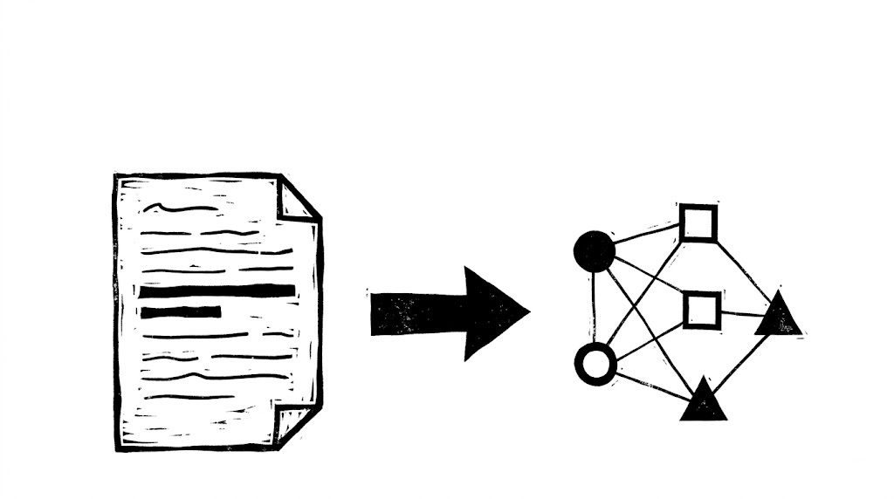

大部分人做筆記的方式是：讀一篇東西，然後幫它寫一份摘要。這個習慣有一個安靜的代價——它讓你的筆記永遠無法規模化。這篇拆解一個生物學博士花四年建起來的系統，他靠它提早五個月交出博士論文、外加四篇第一作者論文。核心不是任何工具或外掛，是一個他稱為「心態轉換」的東西：停止對「來源」做筆記，開始對「主題」做筆記。以及一個很少被講清楚的分類：把「別人說的」「我理解的他說的」「我說的」實體分開存放。
Ilya Shabanov 三十六歲才開始念生物學博士，而他的生物學知識停在高中。這個落差把他推去研究「怎麼學得更快」：他讀了《Smart Notes》、讀了《第二大腦》、研究了卡片盒筆記法、試遍了能找到的所有工具，然後開始建自己的東西。四年後那是一個涵蓋他讀過每一篇論文、劃過每一條主張、每一個問題與想法的可搜尋知識庫。他說它「有點像維基百科，但是為我自己的研究而做的」。
他強調跟卡片盒或第二大腦最大的差別：因為每一條主張都附有出處，它可以直接被拿來寫論文，而不只是用來學懂一個複雜主題。這個差別聽起來小，實際上決定了系統能不能真的替你工作。
01為什麼你需要一個資訊策略▶ 0:00
他用下棋開場：西洋棋誰會贏？永遠是有策略的那個人。只要對手懂一丁點策略性的知識，你就完全沒有機會。
而多數人面對大量資訊的解法不是策略，是硬幹。他引了一份《Nature》的調查：約 78% 的研究生每週工作超過四十小時。換句話說，大家是靠磨的方式撐過博士的，那就像一次又一次跟大師下棋然後一直輸。他借孫子的話總結：沒有策略的戰術，是戰敗前的噪音。
既然這件事的本質是知識，你需要的就是一套組織知識的策略。而他建議不要自己憑空發明——先去看那個現成的、規模最大的成功案例。
02維基百科的兩個設計決定▶ 2:15
打開維基百科，先注意它沒有的東西：沒有任何資料夾，沒有任何東西告訴你一個頁面「屬於」哪裡。它完全靠概念之間的連結組織，滑鼠移到一個詞上就跳出解釋，讓你幾乎不必離開就取得資訊。而每一條主張都能追回某篇論文或某個來源，頁面底部列著構成這篇文章基礎的所有書籍、期刊與網站。
接著注意另一個它沒有的東西，這才是重點：你在維基百科上永遠找不到底下那些論文的摘要。
而你自己讀一篇論文、要做筆記時，做的第一件事是什麼？多半是幫它寫摘要、劃重點、對這篇論文做些什麼。維基百科完全沒有這一層——這不是疏漏，是刻意的，因為那是唯一能組織大量知識的方式。
所以整套系統的設計就是：拿維基百科的組織方式，把內容換成你自己的研究。技術上維基百科的每個概念是一個網頁，你需要瀏覽器去走那些連結；那麼在個人版本裡，Obsidian 就是瀏覽器，而網頁換成硬碟上的純文字檔。這樣所有東西都留在你自己的電腦上，還可以順便把論文 PDF 也放進去。
他提到自己就是因為這個理由離開 Notion 和 Evernote：整個知識庫就是硬碟上一堆檔案，可以用任何別的程式打開。如果 Obsidian 明天開始收費，你的資訊還在你手上。
03工具層：真正要會的沒幾件▶ 5:23
這一段是操作教學，可以快轉，但有三個東西值得知道，因為後面的系統要靠它們運作。
連結與嵌入。用兩個方括號建立指向另一則筆記的連結；如果那則筆記還不存在，點下去它就被建出來。在連結前面加一個驚嘆號，就從「連過去」變成「把整份內容嵌進來」。這是所有結構的基礎。
屬性（properties）。在檔案最上方用三個減號開啟屬性區，可以幫每則筆記加作者、期刊、標題、標籤等欄位。關鍵細節：屬性的值本身也可以是連結。把期刊填成連結，就等於自動建立了一則「這本期刊」的筆記，之後所有發表在該期刊的論文都會匯聚到那裡。
Bases。他認為這是 Obsidian 最被低估的功能，很多人覺得它太技術而不用，他的看法完全相反——Bases 是把 Obsidian 用得有結構的地基。它其實就是 Excel：Excel 有列與欄，可以依欄位值篩選列；Bases 的列是筆記、欄是筆記的屬性。你可以建一個只顯示 sources 資料夾、依評分排序、附上你自己寫的摘要的表；也可以建「待讀清單」表，附上你想讀它的理由；或是一張列出全部論文、依年份分組的大表。他說一旦上手，這種表可以直接取代 Zotero 這類文獻管理軟體，而且比它快得多、可以立刻跳進論文、立刻跳進 PDF。
04STA：分清楚是誰在說話▶ 21:01
這是整套系統的核心，也是他說「多數人走錯的地方」。
錯在哪裡？以為做筆記＝幫一篇論文寫摘要。他給了兩個理由。第一個很直接：論文本來就有摘要，而且是比你更懂這篇論文的人花好幾個小時寫的，你重寫一份沒有增加任何東西。第二個理由才是關鍵——
從行李箱換成衣櫃，需要的正是那個心態轉換：不要對來源做筆記，先看懂這個來源在談哪些主題，再把它對這些主題提出的主張，抽進各自對應的筆記裡。
他說實驗了很久之後，確認只需要三種筆記，系統就能運轉：
他舉了自己的兩個論證筆記做例子。一則是「養育行為對物種分布範圍的位移有沒有影響？」——他把跟學界某人往來的一整串 email 貼了進去，對方給了很好的觀點、指向了幾篇論文；靠著反向連結他能看到這個問題被用在哪裡，想繼續探索時已經知道從哪起步。另一則是他自己寫的東西：論文目標、章節大綱、加了引用的條列引言。那完全是他自己的產物，所以它是論證筆記。
05實際跑一遍：一句話怎麼變成幾個節點▶ 38:15
知道三種筆記還不夠，真正的手感在「讀到一句話的當下要做什麼」。他的姿勢固定：左邊放要讀的東西，右邊放筆記，一路往下讀，看到有價值的就往右邊放。
整個動作大致是這樣。讀到「氣候變遷對生物多樣性影響的證據正在累積，但也有文獻顯示這些反應的速率與方向差異極大」，這句話是關於「生物多樣性」這個概念的 → 打開那則主題筆記，把主張壓縮成一句「生物多樣性變化的速率差異極大」，然後加上指向來源筆記的連結，確保讀者（包括未來的你）知道這不是你說的、是那篇論文說的。
再讀到「這種複雜性來自生物過程不會以直接且線性的方式回應氣候」，這句話值得開一則新的主題筆記「生物過程」，寫下「對氣候的反應不是線性的」，一樣連回來源；同時回到原本那則「生物多樣性」筆記補一句「原因是生物過程有非線性反應」，並連到新開的那則。兩個概念之間的關係就這樣長出來了。
接下來是這套系統裡最值得偷走的一個細節，也是它跟一般筆記法真正拉開差距的地方。
他用 Obsidian 的「複製連結到選取範圍」功能，直接連到 PDF 裡的那一句。這樣滑鼠移過去，跳出來的不是來源筆記，而是原文中的那一句話。他解釋為什麼非這樣不可：某篇論文的引言寫著「在草本植物群落中，較暖或較濕的條件會提高生物量與高度」——但仔細看，提出這個主張的不是這篇論文，是它的參考文獻第 24 和 25 篇。如果你引用時說「這是 Vanwyck 2020 說的」，別人一查就會發現那篇論文跟你講的根本無關，那只是引言裡的一句話。這是一面紅旗。所以他的慣例是每條主張掛兩個連結：一個直接指到原文那一句（用來查證真偽），一個指到來源筆記（用來連上整個網絡）。手動做很煩，可以用 PDF++ 這個外掛自動化。
來源不是 PDF 的時候（例如一篇網頁文章），用 Web Clipper 把整頁抓進來，來源筆記就直接包含全部原文。連結方式一樣，只是改用 Obsidian 的區塊連結（游標打 ^ 就可以選中原文的任一個區塊）。原則是不變的：來源筆記一定要能連到 PDF 或原文本體，因為那是唯一能回頭查證你抽出的主張有沒有抽錯的方式。他說得很坦白：你一定會抽錯，而且過幾年回頭看會覺得自己當時在想什麼——因為你的思考在進步，同樣的字你會讀出不同的東西。
做久了之後有兩個效果會同時出現，而且方向相反：主題筆記慢慢長成那個窄題目的迷你文獻回顧；來源筆記則變成通往它所涉及的所有主題的閘道。打開一篇論文的來源筆記、展開反向連結，就能看到它在你的知識庫裡碰到了哪十個概念。

原文裡的一句話 拆成節點：形狀不同＝責任歸誰不同06為什麼這套規模化得起來▶ 49:06
他打開一則自己最早期的主題筆記，指出一個容易被忽略的特徵：所有筆記都很短。他稱那些句子為原子句——短到不必再加任何東西就能獨立成立。
短的好處在後面才顯現：它們變成一塊塊拼圖。你可以自己把二十五個條列想辦法組成一個段落，也可以請 AI 加一點提示去組。出來的東西不會完美，但已經是一段像樣的學術段落初稿，而且自帶全部正確的引用。
他把這件事講得更狠一點：這些原子句累積起來之後，會替你把論文寫掉。而且反過來查證也變簡單——主題筆記連到來源筆記，來源筆記連到 PDF，PDF 裡有你當初的劃線，隨時能往回追。
（他順帶提到這種寫作方式是否合乎學術倫理曾引起爭議：他寫過一篇描述這套系統的文章，差點讓他被學校退學，鬧得很大。他把那段經過另外做成一支影片，留給觀眾自己判斷。）
07新想法是走出來的，不是想出來的▶ 50:18
影片開頭他說「產生新想法是這套系統的副作用」，最後一段解釋這句話。
他示範怎麼在自己的知識庫裡散步。從一則關於化石燃料的筆記出發，它連到氣候變遷；讀著氣候變遷這則，看到氣候變遷的影響之一是冰層融化，那是另一則主題筆記；而冰層融化這則又連到企鵝，因為幾年前你純粹出於興趣讀過一篇關於南極企鵝族群下降的論文。
走到這裡，你已經在最新的化石燃料排放推估和企鵝族群下降之間建立了一個連結——而這件事並不平凡。你現在可以開一則新的問題筆記：「新的化石燃料排放推估會怎麼影響企鵝族群？」這個想法不是靠任何腦力激盪儀式產生的，是走這張圖走出來的。
他最後用一組對照收尾，是整支影片最好記的一段：
獵人的模式是：要寫論文了，才開始去找論文、去找怎麼寫，得把所有東西重新找一遍、重新塞進腦袋，才進得了寫作那一步，非常耗力。農夫的模式是：筆記是植物，你播下它、給它土壤、把它連起來、按某種方式照料它，然後就只是等待，讓知識網絡自己長。等到真的要寫論文，你要做的只是摘幾則筆記下來拼成一篇。蘋果早就長在樹上了，你只要伸手摘下來咬一口。
他也提醒別想一次學會全部：Obsidian 第一次上手複雜得要命，他自己在「怎麼讓結構在幾百上千則筆記之後還撐得住」這件事上犯的錯最多。這些精緻化的部分（外掛、顏色、自動化）都是你玩久了自然會發現的，不用急著一次到位。
這篇補的是「知識庫的內部結構」，可以接 Claude Tag 那類「AI 當常駐同事」的討論：一個結構清楚、每條主張都有出處的知識庫，正是讓 AI 能可靠地替你工作的前提。想法從走圖走出來這一段，也跟 第一性原理思考 的「答案藏在不同深度、多挖一兩層」是同一副骨架，只是這篇把它變成了一個可以每天執行的動作。
—怎麼用在你身上
你已經在跑一套很接近的東西了：剪報進站、抽成主題筆記、寫進主題知識庫、靠索引與領域地圖導航，還有定期的健檢與產出回流。骨架這一層你的其實走得比他遠——他只有 graph view，而且他自己承認 graph view 「視覺上很壯觀，但不太能拿來導航」。所以下面只列他有、而你目前缺的三件事，加上一件不用學的。
- 來源這一層是空的，而且缺的是「反查」。你的流程是剪報抽完就進歸檔資料夾，那是一堆檔案、不是知識庫裡的節點——它不被連結、不進圖、不被反向連結接住。結果是單向通的：你能從一則主題筆記看到它的來源網址，但沒辦法反過來問「某集訪談的內容散落在我的知識庫哪幾篇」。要補的話，成本最低的做法是每則剪報建一個很薄的來源筆記（只有屬性＋原文連結），主題筆記引用時連它，反查方向就通了。
- 主張級的追溯。你現在是「一篇一個來源、整篇一個連結」。他那個紅旗案例值得記住：論文引言裡的句子，提出者常常是它的參考文獻而不是它本身。你會踩到的等價情況是合輯型內容（一支影片裡六個不同專家）、以及已經標註「單一研究、數字要打折」的那些筆記——目前那些警語是人工寫在正文裡的，機器查不到。至少對這兩類，可以考慮讓每條主張自帶出處。
- 論證筆記完全沒有對應物，而這件事跟你現行的規則不衝突。你目前的規則是反思產出預設不寫進筆記，理由是理解不能外包、反思是你自己內化的工具。那條擋的是「我幫你歸納成守則寫進正本」；他這條說的是另一件事——你自己的問題要有個會被圖接住、會被反向連結反查的地方住。你自己的想法現在散在日誌留言、對話裡、跨專案教訓檔中，知識庫本身接不住。這是三件裡最值得想一想的，但它會動到現行規則，所以留給你決定，我不自己加。
- 不用學的：Bases 取代 Zotero 那一段。那是為了管理幾百篇 PDF 論文的文獻工作流，你的來源是網頁與影片剪報，用不上。